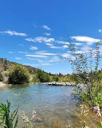

Descubre el pulmón verde de la Región de O'Higgins. Un refugio de naturaleza, historia y paz a solo minutos de la ciudad.
La Leonera
¿Es La Leonera una reserva natural?
Río
Montaña
La Leonera en Codegua, Región de O'Higgins, es un entorno natural y
rústico situado a 80 km de Santiago, destacado por sus bosques,
el paso del río del mismo nombre...

¡Aviso! La reserva se encuentra abierta para visitas guiadas este fin de semana.